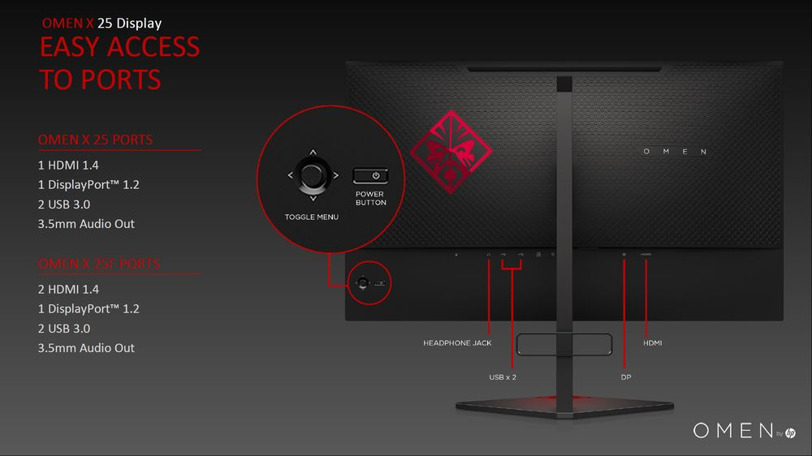

Omen X 25 to oficjalny monitor rozgrywek Overwatch League. Wersja z modułem G-Sync jest jednak zauważalnie droższa od modelu FreeSync.

W ofercie marki HP Omen znajdziemy dwa ciekawe monitory dla graczy – Omen 25 i Omen 27. Ostatnio producent poszerzył ofertę o kolejną konstrukcję, która szczególnie zainteresuje miłośników dynamicznych gier akcji.Mowa o modelu Omen X 25, w którym zastosowano 24,5-calową matrycę TN o rozdzielczości 1920 x 1080 px i częstotliwości odświeżania na poziomie aż 240 Hz. Dodatkowym atutem jest tutaj wsparcie dla technologii Nvidia G-Sync (Omen X25) lub AMD FreeSync (Omen X 25f), co powinno jeszcze bardziej poprawić płynność wyświetlanej animacji.
Zastosowany panel cechuje się typowymi kątami widzenia 170/160 stopni, ale za to oferuje czas reakcji na poziomie 1 ms (GtG), podświetlenie LED rzędu 400 cd/m2 i kontrast na poziomie 1000:1. Producent chwali się również dobrym odwzorowaniem barw (100% pokrycia palety sRGB).
Do dyspozycji oddano wejścia HDMI 1.4 oraz DisplayPort 1.2, a oprócz tego udostępniono złącze audio oraz hub z dwoma portami USB 3.0.
Zastosowana konstrukcja pozwala na regulację położenia ekranu w pionie o 130 mm oraz odchylenie o -5/+23 stopnie). Ciekawostką jest też podświetlenie Ambient Light (RGB).HP Omen X 25 trafi do sprzedaży w lipcu. Wersja z modułem G-Sync została wyceniona na 629 euro, natomiast wersja obsługująca technologię FreeSync jest dużo tańsza – jej cena ma wynosić 459 euro. Model ten jest również oficjalnym monitorem Overwatch League.